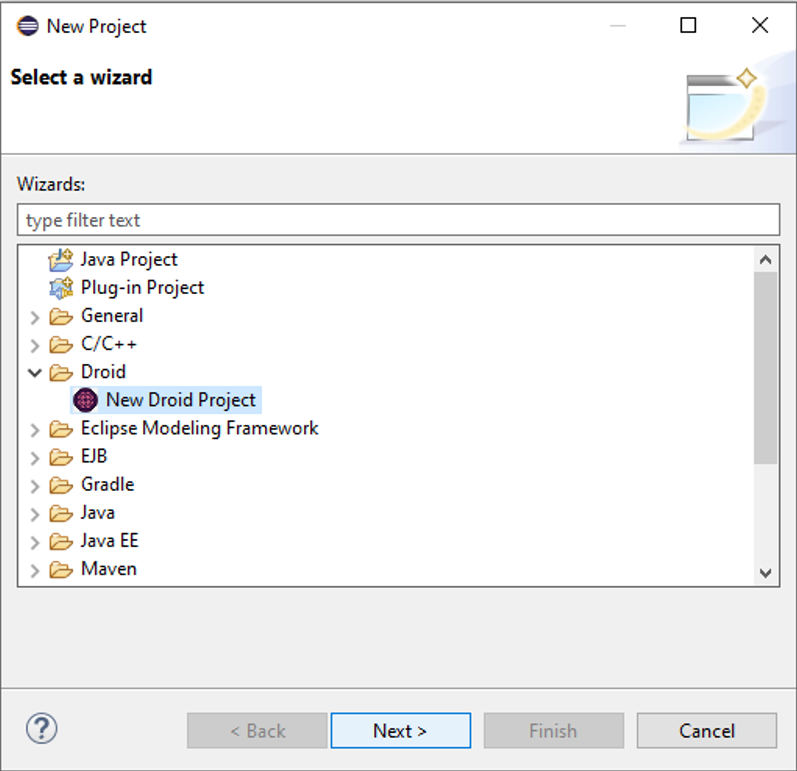
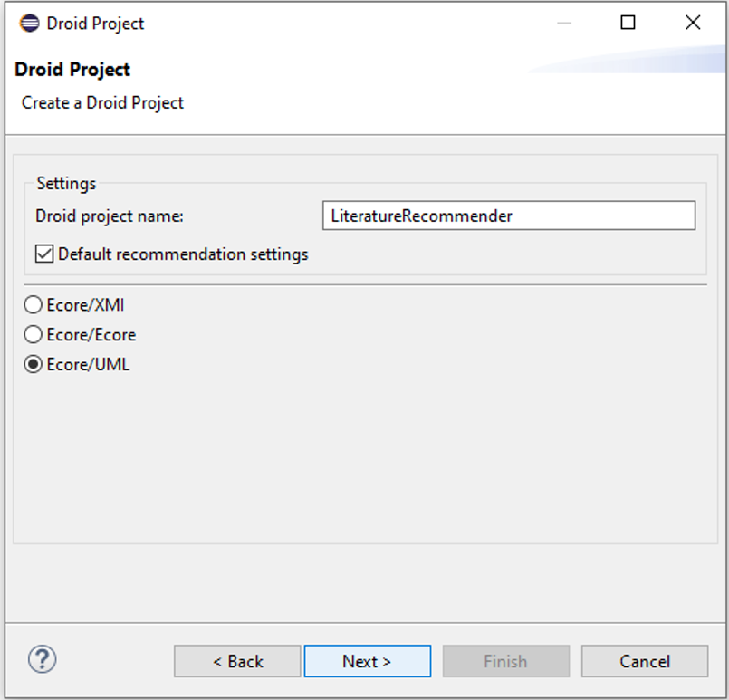
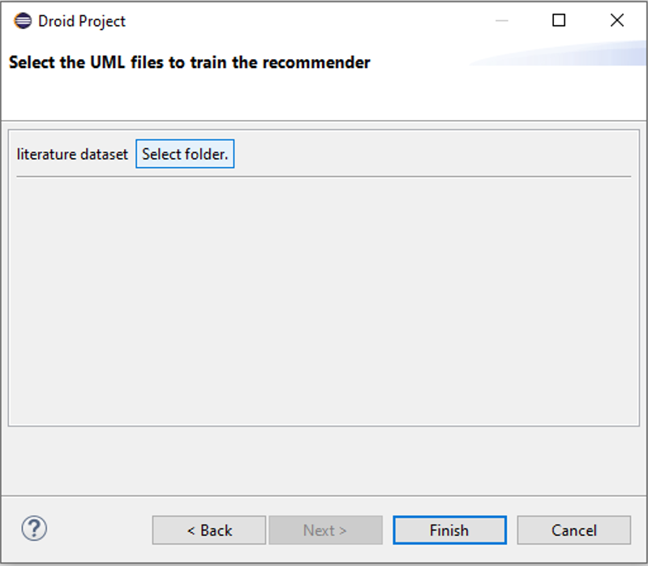
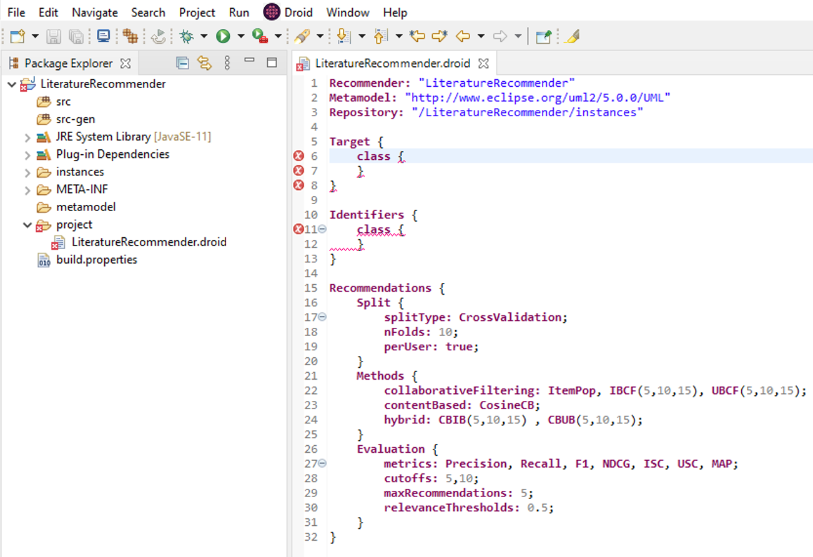
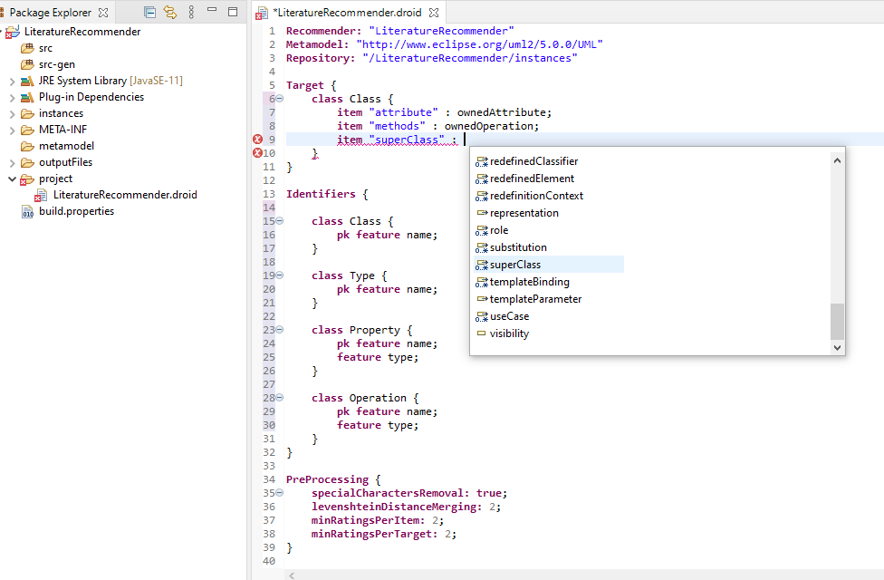
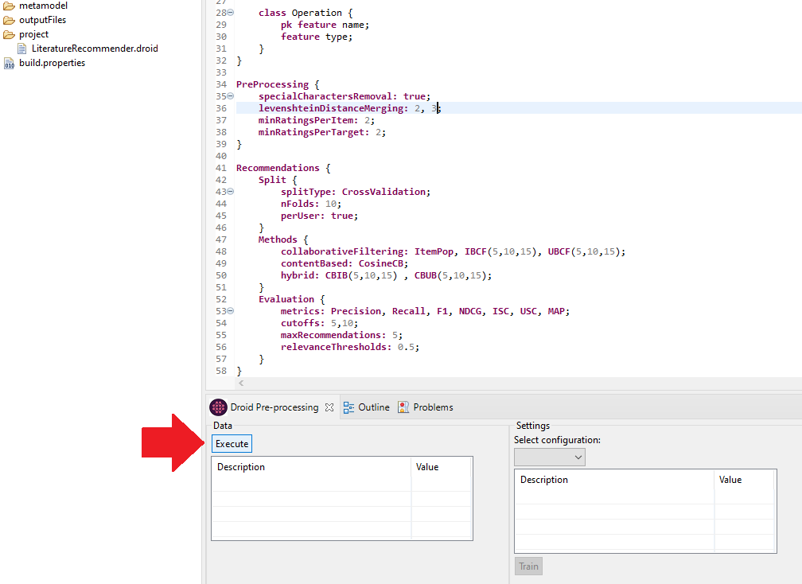
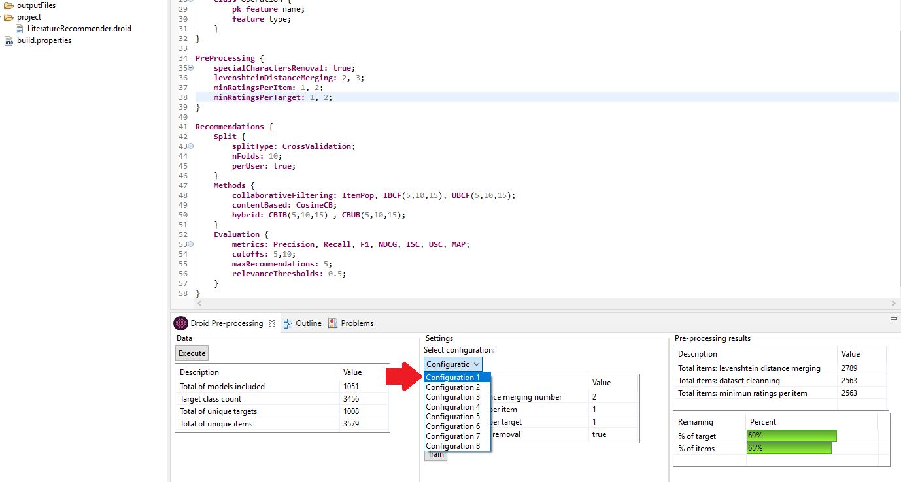
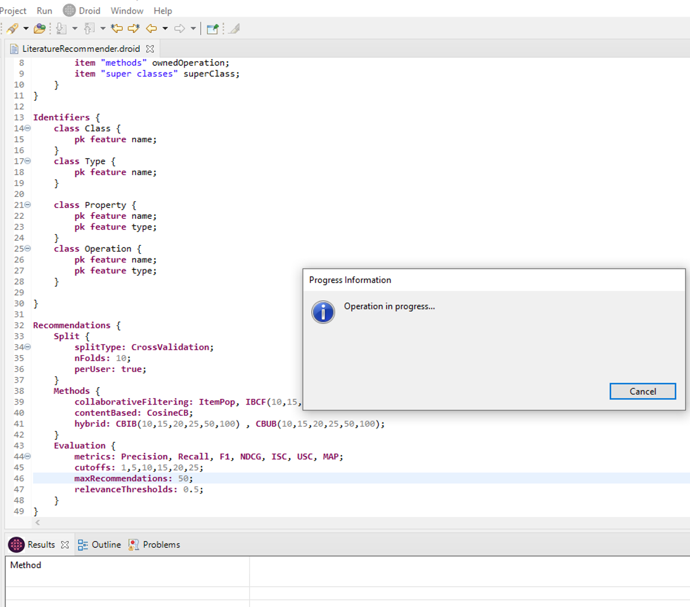
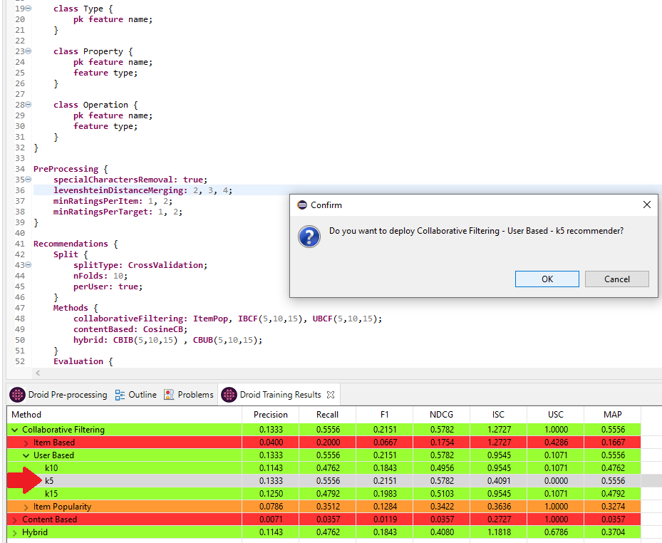

A model-driven solution to automate the configuration, evaluation and synthesis of recommender systems for modelling languages.
A model-driven solution to automate the configuration, evaluation and synthesis of recommender systems for modelling languages.
Droid is a framework that automates the configuration, evaluation and synthesis of recommender systems for modelling languages. The framework supports:
Droid is composed mainly of an Eclipse Textual Domain-specific language (DSL) that is the hearth of the Droid configurator. The configurator allows, via the DSL, the configuration of RSs for a particular modelling language, from preference settings to full performance evaluation. The selected recommendation method is deployed as a service; which then heterogeneous modelling clients can integrate.
Currently, we provide automated, out-of-the-box integration with the tree editor of the Eclipse Modeling Framework (EMF). But additionally, the generated recommenders can be integrated with other modelling technologies.
The goal of this tutorial is to present an introduction to Droid through a simple example. This tutorial will guide you through the necessary steps to create a Droid project; define a set of recommender systems to generate and evaluate; and show you all the features that Droid provides for the automatic configuration, evaluation and synthesis of recommender systems for modelling languages.
This tutorial is designed for recommender systems developers and users of modelling tools that are interested in generating tailored recommender systems for arbitrary languages. Before proceeding with this tutorial you should have a good understanding of the Eclipse Modelling Framework (EMF). If you need more information regarding EMF you can find it here. A basic understanding of Eclipse IDE is also required because the examples have been compiled using the Eclipse IDE.
Creating a new Droid Project
To create a new Droid project first select File → New → Other… from the main menu. The dialogue will offer different project types. Select New Droid Project from the category Droid and continue via Next.
The wizard will guide you through the new project creation process. It will require you to introduce the project name and to select the format of the meta-model/models of the language for which the RS is being developed (Ecore/XMI, Ecore/Ecore, or Ecore/UML). Additionally, an optional checkbox offers a default set of recommendation setting options.
With this initial information, the wizard will require you to provide the necessary data for the training and testing of the recommender systems. If Ecore/XMI option was selected, the wizard will provide you with a meta-model loading page to select the Ecore file. Afterwards, another page will allow you to choose the folder containing the XMI model instances conforming to this particular meta-model. Conversely, if the Ecore/Ecore or Ecore/UML has been selected, the wizard will only requered you to select the folder containing the Ecore meta-models/UML models for the training as the meta-model for these cases is automatically registered by Droid.
Defining a set of recommender systems to generate and evaluate
The Droid editor describes the class subject to recommendations, called target; the items to be recommended; and the recommendation configuration settings. This includes the pre-processing techniques, splitting configuration, recommendation methods and evaluation preferences. The following image presents a pre-configured Droid project.
In the editor, you can define the target and items for the recommender systems, as well as the identifiers for each class. You can also modify the proposed setting or leave it with the provided default values. In addition, the Droid IDE provides code completion and code validation.
After defining the necessary information and saving the file Droid generates a set of Java classes. With this information generated, pressing Execute button under Droid pre-processing view will read all the models and pre-process the data.
The Droid pre-processing view is automatically populated with the results of the different configuration settings. In this view, the description of the datasets, the configuration information and the final set of items are available after each step. Additionally, a bar with the remaining targets and items available for the training for each setting is shown.
After selecting a configuration setting pressing the Train button the recommendations setting will be executed.
Visualizing the results
Finally, The Droid Training Results view is automatically populated with the evaluation results in a drill-down table for each recommendation method and metric. The results are grouped by the recommendation methods categories: Collaborative Filtering, Content-Based and Hybrid. The table makes use of different colours to facilitate the comparison of the metric values based on the metric F1. The recommendation methods with results in the top 20% are shown in green; the ones under the median in red; and the rest are shown in orange. After double-clicking the prefered method a pop-up dialogue is shown asking if we want to deploy that particular recommender.
Add
Add